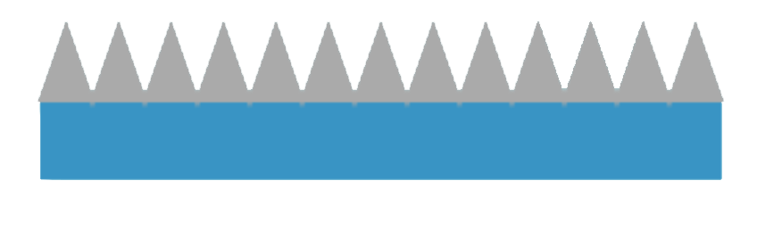

How to play :
- Press to start and pause the game
- Press andto control the character
- Lose 3 and 5 life counts when in contact with and the ceiling spikes
- Restore 1 life count and gain 1 point when landing on all other platforms
- Feeling easy peasy? No worries, the game will speed up as you score higher
- Game over when :
1 ) losing all 10 life counts
2) falling out of the game view